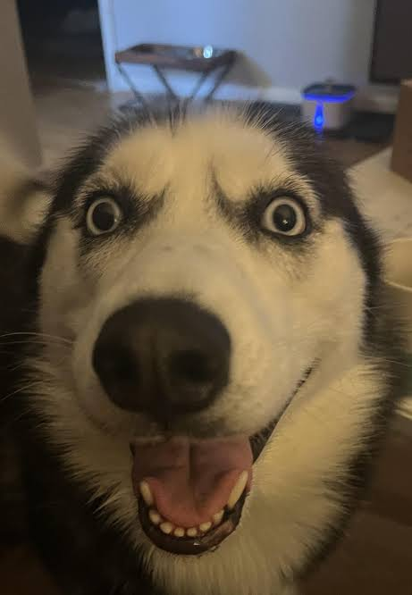
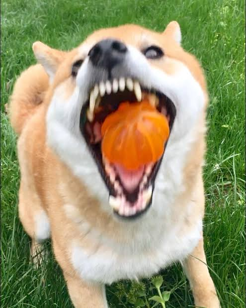
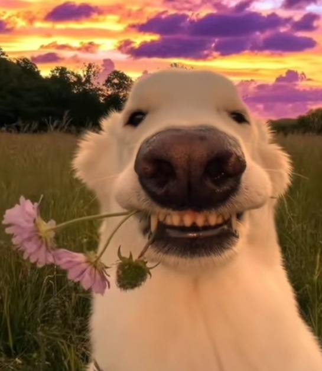

Corgis are small herding dogs with short legs and long bodies. There are two main breeds: Pembroke Welsh Corgi, which has a docked tail, and Cardigan Welsh Corgi with a long tail. They are known for being energetic, intelligent, and affectionate.

The Husky is a medium-sized working dog known for its endurance and striking appearance. Bred by Siberian nomads for sled pulling, they are energetic and friendly. Huskies are social dogs that thrive on activity but can be independent and stubborn.

The Shiba Inu is a small, agile breed of dog from Japan, originally bred for hunting in mountainous terrain. Known for their fox-like appearance, they have erect ears, a curled tail, and a confident, bold personality. Shiba Inus are independent and strong-willed but can be loyal and affectionate with their owners.

The Borzoi is a graceful sighthound from Russia, bred for hunting wolves. They are known for their slender build and dignified, calm demeanor. Borzois are independent but affectionate with their families and need space to run.

The Chihuahua is a small dog breed known for its big personality and alert nature. Despite their tiny size, they are bold, confident, and often very loyal to their owners. Chihuahuas are popular companion dogs and come in a variety of coat colors and types.